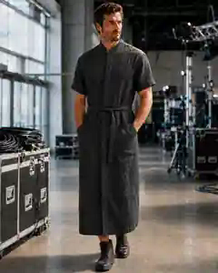
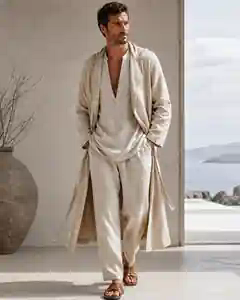
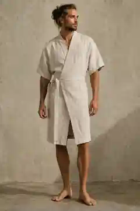

Pattern 005 · design study
The men's work robe.
A modern linen robe meant to be worn as normal clothes: part priest robe, part workwear, part ancient-future simplicity. Practical enough for an AV call. No shirt or pants required underneath.

Current favorite
Keep this top. Toughen the bottom.
Short sleeves, a clean standing collar, a closed front and large work pockets make this feel like real clothing instead of loungewear. The next version should make the lower half shorter, straighter and more masculine while preserving easy movement.
- 100% linen
- Short sleeves + standing collar
- Secure wrap or hidden closure
- Large tool-friendly pockets
- Straight or lightly tapered lower silhouette
- Designed to work as one complete garment
Concept studies
Finding the shape.
These are visual prototypes, not finished products. We can combine the strongest parts into the first open sewing pattern.


Ancient simplicity · modern workwear · open pattern